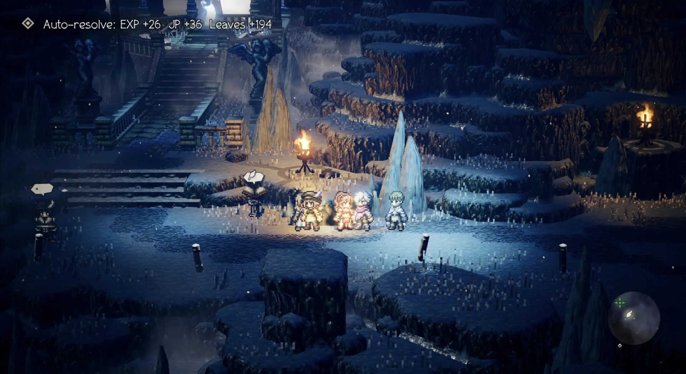

Overview
This mod only applies to ordinary random encounters triggered while walking on the map. Once the level threshold is met, it skips the battle transition and awards the enemy group's base rewards. Boss, story, fixed event, duel, and provoke encounters remain normal battles; encounters that cannot be confirmed are not resolved automatically.

Awards EXP, JP, and leaves, including static party support and EXP/JP accessory bonuses.
Adds drops within native inventory limits; only item quantity is truncated when a stack is full.
F6 toggles and saves the enabled state. Notifications follow the game's interface language.
Does not simulate combat-performance bonuses such as breaking or taking no damage, stealing, capturing, first-species discovery, or later rare-cat substitution.
Eligibility
An ordinary random encounter is skipped only when the highest active-party level meets the enemy-group and area thresholds:
The default is LevelMargin=1. Encounters outside the ordinary random-encounter path still use native battles, even when the level condition is met.
- Knocked-out members receive no EXP, JP, or level-up recovery; living max-level members can still receive JP.
- A character recovers HP/MP only after actually levelling up; members who do not level up are not healed.
- Earned leaves are recorded through the game's native cumulative-money interface.
Installation
Targets Windows Steam build 5272616. The mod-only ZIP does not include a loader; install official UE4SS 3.0.1 first.
- Exit the game and open its directory:
Octopath_Traveler\Binaries\Win64. - Extract the downloaded ZIP and copy its
Win64/Mods/OT1AutoResolvefolder to:Octopath_Traveler\Binaries\Win64\Mods\ - Add one line to the existing
Mods\mods.txt, preserving all other entries:OT1AutoResolve : 1 - The mod becomes active after entering the map. Press F6 to turn automatic resolution off.
These paths match the mod-only ZIP from the release page. In the source archive, the mod folder is at mod/OT1AutoResolve; that is not the path inside the installer ZIP.
Settings
The configuration file is Mods\OT1AutoResolve\config.ini. Restart the game after editing it.
[AutoResolve]
Enabled=1
ToggleKey=F6
LevelMargin=1
ShowUI=1Enabled1enables and0disables the mod; the hotkey saves this value.ToggleKey- Accepts F1–F24; set to
Noneto disable the hotkey. LevelMargin- Level difference from 0–99, default 1; set to 0 to resolve at an equal level.
ShowUI1shows reward notifications;0hides them.
Upgrade and uninstall
Upgrade
Replace only the OT1AutoResolve\Scripts folder. Keep the existing config.ini and other mods.
Uninstall
Exit the game, delete the Mods\OT1AutoResolve folder, and remove its line from Mods\mods.txt. Keep shared loader files if other mods still use UE4SS.
Troubleshooting
What if F6 does nothing?
Check that Mods/mods.txt contains OT1AutoResolve : 1, and that ToggleKey in config.ini is not None. Restart the game after editing the configuration manually.
Why do ordinary enemies still start a battle?
Check that the party meets the current level threshold and that the encounter was triggered by walking on the map. Boss, story, fixed event, duel, provoke, and unconfirmed encounters always remain normal battles.
Where can I find logs if rewards look wrong?
The mod does not save the game. If an interface is unavailable, the normal battle proceeds; a reward-write error stops further automatic resolution. Check the game's Win64/UE4SS.log.